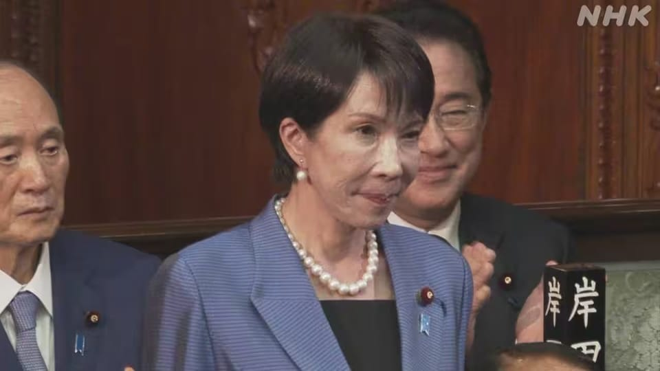

世界苦茶10月21日新闻 | 40条 | 秦刚罕见公开露面

秦刚罕见公开露面 | 中国驻世贸代表被替换 | 特朗普逼迫泽连斯基割地求和 | 国际调解院香港总部开业 | 中国楼市下行趋势加剧
苦茶数据
美元兑人民币：7.12（昨日7.12，前日7.12）
美元兑日元：151.82（昨日150.65，前日150.42）
上证指数：3916（昨日3853，前日3839）
标普500指数：6735（昨日6664，前日6629）
比特币：108383（昨日111256，前日106992）
布伦特原油：61.46（昨日60.79，前日61.29）
中国新闻
• 中国前外长秦刚罕见露面 网传在京观看音乐节。
中国前国务委员、外交部长秦刚本月在北京的一个公开场合罕见露面，并与多人合影。这相信是秦刚远离公众视野两年多后，再度公开露面。据香港《星岛日报》报道，网传照片显示，秦刚疑似参加了本月举行的第二十八届北京国际音乐节，他在活动上身穿深色西装，系红色领带。公开资料显示，第二十八届北京国际音乐节10月10日至24日在京举行。网上流传的照片中，疑似秦刚的男子与众人合影，背后大屏幕显示当天的日期为10月17日。今年59岁的秦刚，曾任中国外交部发言人、驻英国公使、新闻司司长、礼宾司司长、部长助理，2018年升任外交部副部长，2021年出任中国驻美大使。秦刚在2022年底接替王毅担任中国外长。
• 致力于和平解决国际争端 国际调解院香港总部开业。
总部位于香港的国际调解院正式开始运作，这是全球首个致力于调解解决国际争端的政府间法律组织。综合中国外交部官网与香港电台消息，30多个国际调解院公约缔约国和签署国，以及香港各界近200名代表星期一出席了开业仪式。中国外交部副部长华春莹致辞时说，国际调解院融合各主要法律体系特点，为国际之间透过法律手段解决争端，开辟新途径。香港特首李家超说，香港将继续发挥“一国两制”下自身优势，支持国际调解院和争端解决事业发展。香港前律政司司长郑若骅，获任命为国际调解院首任秘书长。中国2022年起与18个国家推动建立国际调解院，去年10月完成谈判，总部设在香港旧湾仔警署的大楼。今年5月，32国代表在香港签署公约。
• 长江和记实业与巴拿马政府达成协议的迹象令人鼓舞。
一位巴拿马高官周一表示，巴拿马将保持灵活，并可能与长江和记达成协议，因为这个拉美国家正在应对美中之间的地缘政治对抗。负责运河事务的何塞·拉蒙·伊卡萨部长表示：“我们正在制定一个方案，以防[巴拿马最高法院]的裁决不利于延长长江和记的合同。”他在大西洋委员会的阿什特拉美洲中心周一的一次活动中说：“在那种情况下，我们必须作为巴拿马海事管理局出面接管该特许经营权，同时不引发供应链中断。”长江和记由香港富商李嘉诚持有，持有巴拿马港口公司90%的股份，该公司在2021年续签了经营巴尔博亚港和克里斯托巴尔港的25年特许经营权。然而，总审计长于7月底向巴拿马最高法院提起了两起诉讼。
• 德语媒体: 离开中国 气候保护无从谈起。
柏林出版的《日报》发表评论写道，在太阳能发电、风力发电以及电动车技术领域，中国扮演着至关重要的角色。因此，要想实现减排目标，中国是一个不可或缺的护合作伙伴。这篇题为《离开中国寸步难行》的评论写道： “对于中国在全球气候变化中所扮演的角色，存在着两种截然相反的叙事：一种说法认为中国 是全球最大的温室气体排放国，并仍在不断兴建新的燃煤发电厂。另一种说法则着重强调，中国已经成为绿色能源技术研发方面的引领者，使世界各国得以用更低的成本去推进去碳化努力。两种说法都是正确的，中国乃至整个世界在制定气候政策时。
• 越捷航空结束运营中国制造的中国商飞飞机。
越捷航空于10月18日停止运营两架中国制造的中国商飞C909飞机，此前这些飞机的六个月租赁合同到期。然而，越捷航空选择不延长租赁，并且没有立即计划从中国国有飞机制造商中国商飞购买飞机。这次租赁标志着中国飞机首次在越南国内航线上使用，包括河内–昆岛和胡志明市–昆岛航线，并且对中国商飞来说是个重大突破，该公司一直努力使其飞机在海外使用。终止是由于与外国机组人员和维护服务相关的高运营成本，及越南航空法规下的监管限制。越捷航空曾有一项协议，让这些喷气式飞机由中国成都航空公司的机组人员操作。越捷航空公司未来可能转向不同的租赁模式。
• 安世半导体中国子公司告诉员工可以无视荷兰总部的指示。
安世半导体中国子公司告诉员工可以无视荷兰总部的指示 在荷兰政府取得安世半导体的控制权后，安世半导体的中国子公司表示，员工应当继续执行安世国内公司的工作指示，可以无视荷兰总部的命令。这家荷兰半导体公司的中国子公司在上周末通过微信公众号发布的一封致员工信中表示，安世国内全部主体运营及员工薪资福利一切正常。“在任何时候，安世国内公司都是独立经营、决策的中国企业，”安世半导体中国子公司表示，并补充说，安世国内公司是运营扎根中国的中国企业，必须遵守中国法律。该信函还称，在华员工有权拒绝执行荷兰总部的指示。—— 华尔街日报。
• 中国贷款为安哥拉未来城市提供资金，但分析人士对其成本持谨慎态度。
自1990年代近三十年的内战于2002年结束以来，安哥拉在很大程度上依赖中国——其战后基础设施的主要融资方——来帮助南部非洲国家政府兑现建立一百万套新住房的承诺。当西方不愿为其项目提供融资时，罗安达便根据所谓的“安哥拉模式”从中国国有银行获得贷款，并以石油作为抵押。安哥拉成为非洲最大的中方融资接收国，在2000年至2023年间吸引了270笔，总计460亿美元的贷款——占同期对非洲国家发放贷款总额的四分之一。中国还资助建设了若干大型城市项目，如通过以油换建方式融资，由中方企业承建，耗资35亿美元的新基兰巴城。该城位于罗安达以南约30公里处，作为安哥拉内战后国家重建的一部分于2012年完工。
• 解放军油轮“被发现在黄岩岛附近为海警船补给”。
据报道，中国海军补给舰“青海湖”上周曾在有争议的斯卡伯勒浅滩附近为一艘中国海警船补给。此举凸显在与菲律宾因南海争端紧张局势加剧之际，中国海军与海警力量日益协调。马尼拉的ABS-CBN新闻报道说，周五菲律滨海警在斯卡伯勒浅滩附近监测到两艘中国海军军舰、四艘海警船以及数艘中国海上民兵船只。中国控制该有争议浅滩，并称其为黄岩岛。据报道，“青海湖”近期开进南海，与多型驱逐舰、护卫舰及海军航空单位进行一体化作战保障训练。图片：资料图。ABS-CBN的报道说，一艘中国海军舰艇——艏号885的油补舰——似乎正在与一艘海警船进行补给作业。
• 特朗普淡化北京对台湾的威胁，澳大利亚则吹捧稀土协议。
在等了近一年才得以会见美国总统唐纳德·特朗普后，澳大利亚总理安东尼·阿尔巴尼斯周一试图论证其国家的战略价值——但这位“美国优先”的领导人在会见中占据主导，表示北京无意入侵台湾，并未在印太地区构成真正威胁。“中国不想那样做，”他在与阿尔巴尼斯一同出席的新闻简报会上就台湾问题坚持表示，并随后称台湾将是他下周在韩国会见习近平时讨论的议题之一。特朗普表示，此行是更广泛的亚洲之旅的一部分，还包括马来西亚和日本。在庆祝与堪培拉达成的一项数十亿美元的矿产交易，以遏制中国在贸易谈判中的影响力之际，特朗普还对澳大利亚驻华盛顿大使，前总理凯文·鲁德表示不喜欢他，并称“可能永远不会”喜欢。
印太新闻
• 台湾出台新规，明确军队在何种情况下可以击落无人机。
台湾首次正式明确了部队对来袭无人机开火的适用情形。最近发布的《2025年国防报告》披露了新的作业程序，制定了一个四步标准作战流程——识别与监控、警报与通报、安全确认以及防御性开火。报告称，该指引旨在提高部队在面对频繁出现在或接近台湾本岛上空的大陆无人机时的应变能力。台北方面也曾报告外岛附近有规律的无人机活动。另据报道，中国人民解放军也加大了进入台湾防空识别区的无人机飞行，包括飞越岛东部，岛上已建有两个大型地下机库以在遭袭时保存空中装备。
• 日本首次允许将“事后避孕药”以非处方药形式销售。
制造商表示，日本首次批准紧急避孕药在非处方渠道销售，允许女性无需处方即可服用该药。ASKA制药称，扩大该药的可及性将“赋予日本女性在生殖健康领域更多自主权”。尚未公布上市日期。该药将被标注为“须有指导的药品”，意味着女性须在药师在场的情况下服用。俗称“事后避孕药”的紧急避孕药在90多个国家已可无处方购买，旨在防止意外怀孕，其作用是阻止卵子完成发育或着床于子宫内膜。通常需在无保护性行为后3至5天内服用——服用越早效果越好。日本受父权制和关于女性角色的深厚传统观念影响，对与女性生殖健康相关药物的批准一直较为谨慎。
• 日本维新会倾向于与自民党进行"阁外合作"。
在日本维新会的常任役员会议上致辞的代表吉村 围绕在日本首相提名选举前与自民党的政策磋商，日本维新会将于10月20日就与自民党达成协定展开最终协调。日本维新会在19日召开的常任役员会议上，要求不向新内阁派出阁僚的「阁外合作」的呼声占多数。如果达成协定，日本维新会代表、同时也是大坂府知事的吉村洋文将于20日与自民党总裁高市早苗举行会谈。日本维新会的国会议员团将于20日下午召开紧急役员会议和两院议员大会。联合代表藤田文武将就与自民党的合作方式在党内取得方针上的批准。如果与自民党的磋商达成协定，吉村预计将与高市共同签署包含政策要求事项与合作方式等内容的文件。
科技新闻
• 苹果首席执行官蒂姆·库克在 iPhone Air 发布后推动苹果在中国推出人工智。
在上周结束对中国为期六天的访问之际，库克在周六于上海的一场活动上表示，人工智能“正在改变人们的生活”，并称苹果“正在着手把引入中国”。他未给出时间表。Apple Intelligence 是公司在 iOS 18，iPadOS 18 和 macOS Sequoia 操作系统中内置的人工智能功能，于去年六月发布。中国的监管限制使该功能在大陆和香港使用的苹果设备上无法使用。周六在上海全球资产管理论坛上，库克与清华大学经管学院院长白重恩的台上对谈中表示，人工智能有潜力改变商业，教育和医疗。这场对话体现了库克在访华期间与大陆创意人才，商业伙伴，高级政府官员，学界和消费者进行的有目的。
• 美交通部长称SpaceX在登月行程上落后。
美交通部长称SpaceX在登月行程上落后 交通部长肖恩·达菲周一表示，SpaceX在重返月球的阿尔忒弥斯计划中落后于美国的时间表，他将向其他公司开放合同。美国宇航局代理局长达菲表示：“我们不会等待一家公司。我们将推进此事，并赢得与中国的第二次太空竞赛。返回月球，建立一个营地，一座基地。”去年12月，美国宇航局推迟了下一次阿尔忒弥斯任务，下次发射宇航员绕月飞行并返回的任务被推迟到 2026年4月，而将两名宇航员送上月球南极地区的任务则被推迟到2027年。达菲周一表示，他认为这次四月的发射可能会在二月初进行，该机构正寻求与两家潜在公司在2028年重返月球。杜菲强调蓝色起源可能成为接手的潜在竞争者。
• 亚马逊网络服务故障影响Snapchat、Ring及其他在线服务。
伦敦——亚马逊表示，其云计算服务周一晚间已解决大规模故障，此前一次故障中断了全球互联网使用，影响了包括社交网络，电子游戏，外卖，流媒体平台和金融服务在内的广泛在线服务。这次持续数小时的中断及由此引发的愤怒，再次提醒人们，21世纪社会越来越依赖为大部分互联网技术提供服务的少数几家公司——这些服务通常看似可靠，却可能突然崩溃。中断发生大约三小时后，即周一早晨，亚马逊网络服务表示开始着手解决问题，但直到美国东部时间下午6点，AWS网站上用于追踪中断的页面才显示“服务恢复正常运行”。亚马逊网络服务为世界上一些最大的组织提供云计算基础设施，其客户包括政府部门。
• 中国的自动驾驶汽车如何塑造欧洲的科技主权。
随着自动驾驶领域的全球竞争加剧，欧洲成为中国自动驾驶技术快速进军的最新前沿。Pony.ai、WeRide、AutoX、DeepRoute.ai、Momenta 以及百度的阿波罗出行等初创公司，正把试点和合作扩展到多个欧洲城市，使欧洲成为下一阶段的技术角力场。最初为在国内赛道上赶超 Waymo 和 Cruise 等美国巨头而展开的竞争，已经演变为一场跨洲的市场影响力、数据主权与地缘政治杠杆之争。中国转向欧洲既出于机遇也出于必要。在多年受到美国对中国人工智能和数据驱动技术的限制之后，欧洲提供了一个相对分散但对创新更友好的替代舞台。
• SpaceX 完成第 10,000 颗星链发射并刷新复用记录。
SpaceX 完成第 10,000 颗星链发射并刷新复用记录 周日，SpaceX用2枚猎鹰9号火箭分别发射了28颗星链卫星，使迄今为止发射进入近地轨道的卫星总数突破1万颗。这一里程碑是在2025年第132次猎鹰9号火箭发射时达成的，在距离今年结束还有两个多月的时间里，追平了之前的年度发射纪录。而在此次不到两小时前，另一枚猎鹰9号火箭从佛罗里达太空海岸发射了另外28颗星链卫星，创下了单枚火箭第31次发射重复使用纪录。在这1万颗卫星中，目前约8608颗正在运行，其平均运营时间约为5年，之后将坠入大气层烧毁。SpaceX已获准发射1.2万颗卫星，计划发射超过3万颗。
• 欧盟扩大Type-C规范。
欧盟扩大Type-C规范，规定2028年起电源适配器必须采用统一标准 欧盟发布新立法，旨在进一步推动 USB-C接口的标准化。继2024年强制手机和平板电脑使用USB-C接口后，欧盟计划在2026年将这一规定扩展至笔记本电脑。此次新立法的目标是到2028年，将USB-C接口和可拆卸线缆标准化应用于包括游戏机、显示器、无线充电器、路由器、机顶盒甚至以太网 PoE注入器在内的众多消费电子产品。新规将所有类型的电源单元统称为EPS，即外部电源供应器。更新后的法规适用于功率高达 240W的电源供应器，要求它们至少包含一个USB-C端口，并配备可拆卸线缆。电力传输将遵循 USB-PD 标准。
印太新闻
• 台湾出台新规，明确军队在何种情况下可以击落无人机。
台湾首次正式明确了部队对来袭无人机开火的适用情形。最近发布的《2025年国防报告》披露了新的作业程序，制定了一个四步标准作战流程——识别与监控、警报与通报、安全确认以及防御性开火。报告称，该指引旨在提高部队在面对频繁出现在或接近台湾本岛上空的大陆无人机时的应变能力。台北方面也曾报告外岛附近有规律的无人机活动。另据报道，中国人民解放军也加大了进入台湾防空识别区的无人机飞行，包括飞越岛东部，岛上已建有两个大型地下机库以在遭袭时保存空中装备。
• 日本首次允许将“事后避孕药”以非处方药形式销售。
制造商表示，日本首次批准紧急避孕药在非处方渠道销售，允许女性无需处方即可服用该药。ASKA制药称，扩大该药的可及性将“赋予日本女性在生殖健康领域更多自主权”。尚未公布上市日期。该药将被标注为“须有指导的药品”，意味着女性须在药师在场的情况下服用。俗称“事后避孕药”的紧急避孕药在90多个国家已可无处方购买，旨在防止意外怀孕，其作用是阻止卵子完成发育或着床于子宫内膜。通常需在无保护性行为后3至5天内服用——服用越早效果越好。日本受父权制和关于女性角色的深厚传统观念影响，对与女性生殖健康相关药物的批准一直较为谨慎。
• 日本维新会倾向于与自民党进行"阁外合作"。
在日本维新会的常任役员会议上致辞的代表吉村 围绕在日本首相提名选举前与自民党的政策磋商，日本维新会将于10月20日就与自民党达成协定展开最终协调。日本维新会在19日召开的常任役员会议上，要求不向新内阁派出阁僚的「阁外合作」的呼声占多数。如果达成协定，日本维新会代表、同时也是大坂府知事的吉村洋文将于20日与自民党总裁高市早苗举行会谈。日本维新会的国会议员团将于20日下午召开紧急役员会议和两院议员大会。联合代表藤田文武将就与自民党的合作方式在党内取得方针上的批准。如果与自民党的磋商达成协定，吉村预计将与高市共同签署包含政策要求事项与合作方式等内容的文件。
科技新闻
• 苹果首席执行官蒂姆·库克在 iPhone Air 发布后推动苹果在中国推出人工智。
在上周结束对中国为期六天的访问之际，库克在周六于上海的一场活动上表示，人工智能“正在改变人们的生活”，并称苹果“正在着手把引入中国”。他未给出时间表。Apple Intelligence 是公司在 iOS 18，iPadOS 18 和 macOS Sequoia 操作系统中内置的人工智能功能，于去年六月发布。中国的监管限制使该功能在大陆和香港使用的苹果设备上无法使用。周六在上海全球资产管理论坛上，库克与清华大学经管学院院长白重恩的台上对谈中表示，人工智能有潜力改变商业，教育和医疗。这场对话体现了库克在访华期间与大陆创意人才，商业伙伴，高级政府官员，学界和消费者进行的有目的。
• 美交通部长称SpaceX在登月行程上落后。
美交通部长称SpaceX在登月行程上落后 交通部长肖恩·达菲周一表示，SpaceX在重返月球的阿尔忒弥斯计划中落后于美国的时间表，他将向其他公司开放合同。美国宇航局代理局长达菲表示：“我们不会等待一家公司。我们将推进此事，并赢得与中国的第二次太空竞赛。返回月球，建立一个营地，一座基地。”去年12月，美国宇航局推迟了下一次阿尔忒弥斯任务，下次发射宇航员绕月飞行并返回的任务被推迟到 2026年4月，而将两名宇航员送上月球南极地区的任务则被推迟到2027年。达菲周一表示，他认为这次四月的发射可能会在二月初进行，该机构正寻求与两家潜在公司在2028年重返月球。杜菲强调蓝色起源可能成为接手的潜在竞争者。
• 亚马逊网络服务故障影响Snapchat、Ring及其他在线服务。
伦敦——亚马逊表示，其云计算服务周一晚间已解决大规模故障，此前一次故障中断了全球互联网使用，影响了包括社交网络，电子游戏，外卖，流媒体平台和金融服务在内的广泛在线服务。这次持续数小时的中断及由此引发的愤怒，再次提醒人们，21世纪社会越来越依赖为大部分互联网技术提供服务的少数几家公司——这些服务通常看似可靠，却可能突然崩溃。中断发生大约三小时后，即周一早晨，亚马逊网络服务表示开始着手解决问题，但直到美国东部时间下午6点，AWS网站上用于追踪中断的页面才显示“服务恢复正常运行”。亚马逊网络服务为世界上一些最大的组织提供云计算基础设施，其客户包括政府部门。
• 中国的自动驾驶汽车如何塑造欧洲的科技主权。
随着自动驾驶领域的全球竞争加剧，欧洲成为中国自动驾驶技术快速进军的最新前沿。Pony.ai、WeRide、AutoX、DeepRoute.ai、Momenta 以及百度的阿波罗出行等初创公司，正把试点和合作扩展到多个欧洲城市，使欧洲成为下一阶段的技术角力场。最初为在国内赛道上赶超 Waymo 和 Cruise 等美国巨头而展开的竞争，已经演变为一场跨洲的市场影响力、数据主权与地缘政治杠杆之争。中国转向欧洲既出于机遇也出于必要。在多年受到美国对中国人工智能和数据驱动技术的限制之后，欧洲提供了一个相对分散但对创新更友好的替代舞台。
• SpaceX 完成第 10,000 颗星链发射并刷新复用记录。
SpaceX 完成第 10,000 颗星链发射并刷新复用记录 周日，SpaceX用2枚猎鹰9号火箭分别发射了28颗星链卫星，使迄今为止发射进入近地轨道的卫星总数突破1万颗。这一里程碑是在2025年第132次猎鹰9号火箭发射时达成的，在距离今年结束还有两个多月的时间里，追平了之前的年度发射纪录。而在此次不到两小时前，另一枚猎鹰9号火箭从佛罗里达太空海岸发射了另外28颗星链卫星，创下了单枚火箭第31次发射重复使用纪录。在这1万颗卫星中，目前约8608颗正在运行，其平均运营时间约为5年，之后将坠入大气层烧毁。SpaceX已获准发射1.2万颗卫星，计划发射超过3万颗。
• 欧盟扩大Type-C规范。
欧盟扩大Type-C规范，规定2028年起电源适配器必须采用统一标准 欧盟发布新立法，旨在进一步推动 USB-C接口的标准化。继2024年强制手机和平板电脑使用USB-C接口后，欧盟计划在2026年将这一规定扩展至笔记本电脑。此次新立法的目标是到2028年，将USB-C接口和可拆卸线缆标准化应用于包括游戏机、显示器、无线充电器、路由器、机顶盒甚至以太网 PoE注入器在内的众多消费电子产品。新规将所有类型的电源单元统称为EPS，即外部电源供应器。更新后的法规适用于功率高达 240W的电源供应器，要求它们至少包含一个USB-C端口，并配备可拆卸线缆。电力传输将遵循 USB-PD 标准。
经济新闻
• 中国楼市9月下行趋势进一步恶化。
受市场信心疲软影响，中国房地产行业下行趋势进一步恶化，9月份70个大中城市中，新房价格下跌城市数量创年内最多，二手房出现年内首次全跌局面。受访分析师认为，中国楼市仍处下行通道，但对于官方近期是否会出台支持政策提振房地产市场，分析师意见不一。中国国家统计局星期一发布的数据显示，9月中国新房价格环比下降0.4%，跌幅创11个月新高。其中，一线城市新房价格环比下降0.3%，降幅扩大0.2个百分点；二线城市环比下降0.4%，降幅扩大0.1个百分点。70个大中城市中，9月新房价格环比上涨的城市只有五个，是今年以来最少的；70城新房价格整体环比跌幅为0.41%，为今年以来最大值。二手房的形势更严峻。
• 日本餐饮用通缩经验在中国发力低价店。
萨莉亚计划将中国门市数量扩大至1000家，达到现有规模的两倍，回转寿司店「寿司郎」在大中华区的数量达到约190家。日本餐饮企业在长期通缩环境中锤炼出通过高效烹饪加工及出餐来提供低价高质菜品的技术经验。
• 中国9月稀土磁铁出口减6.1％ 市场担忧扰乱供应链。
中国稀土磁铁出口连续上升三个月后，9月份环比减少6.1％，再次引发市场关切中国将利用它在稀土领域的主导地位，作为与美国的贸易谈判筹码。中国海关总署星期一公布的数据显示，9月稀土磁铁出口量为5774吨，低于8月份创下的七个月最高水平6146吨，也结束了连续三个月增长态势。与去年同期相比，中国9月稀土磁铁出口量则增长17.5%。德国、韩国、越南、美国和墨西哥是五大出口目的地。
• 美国和澳大利亚签署30亿美元关键矿物协议。
美国总统唐纳德·特朗普和澳大利亚总理安东尼·阿尔巴尼斯于周一签署了一项协议，将向关键矿物项目投入数十亿美元。美国和澳大利亚将在未来六个月内共同向这些项目提供30亿美元资金。两国政府表示，项目储备库总价值达85亿美元。作为协议组成部分，美国国防部还将投资于西澳大利亚州一座年产量达一百吨的镓精炼厂。根据美国地质调查局数据，目前美国每年进口约21吨镓，相当于其国内消费总量的100%。除关键矿物协议外，澳大利亚已同意从国防初创企业Anduril购买价值12亿美元的自主水下航行器。
• 李咏箑接替李成钢 任中国驻世贸组织代表。
中国官方通报，李咏箑接替李成钢出任中国常驻世界贸易组织代表、特命全权大使，兼常驻联合国日内瓦办事处和瑞士其他国际组织副代表。据新华社报道，中国国家主席习近平星期一任免多名驻外大使，其中包括上述任命。李咏箑曾长期任职中国商务部，担任过条约法律司司长、国际贸易谈判副代表，参与过多起涉及中国的WTO争端解决案件。李成钢目前是中国商务部国际贸易谈判代表兼副部长，是中美经贸谈判中方核心成员。美国财政部长 贝森特上周罕见点名批评李成钢 ，指他在8月“不请自来”访美，且态度“非常无礼”“发表煽动性言论”；中国则指相关言论“严重歪曲事实”。
• 随着紧张局势持续，中国对美稀土磁体出口暴跌29%。
中国对美国稀土永磁体出口在9月加速下降——此时点早于北京扩大对关键矿产流动的管控——这表明这些珍贵物项仍然是世界两大经济体持续贸易战中的主要战场。北京海关总署周一发布的数据显示，上月中国对美的永磁体总出口量为420.5吨，较8月下降28.7%。来自中国的对美出货量已连续两个月下降，打破了自6月开始的短暂回升，当时北京在与华盛顿于伦敦的谈判中同意加快向美国最终用户发放稀土出口许可证。按年比，周一公布的数据还显示，9月对美的稀土永磁体出货量同比下降29%。
• 苹果新款 iPhone 17 在美国和中国的销量比上一代高出 14%。
苹果最新一代 iPhone 开局比往年更快，其最基础机型在美国和中国的人气激增。根据 Counterpoint Research 的数据，在美国和中国两地上市首 10 天内，iPhone 17 系列的销量比 iPhone 16 系列高出 14%。这份数据显示了苹果两大核心市场中消费者反应的首个量化迹象，表明标准款 iPhone 17 的需求远高于去年对应的 799 美元机型。Counterpoint 的分析师将这一增长归因于更好的显示屏，更大的存储空间以及苹果升级后的 A19 芯片。资深分析师 Ivan Lam 表示：“消费者对于基础款 iPhone 17 的更好规格和升级反应强烈。
• 中美角力中，苹果“两边下注”面临平衡考验。
据官方媒体报道，中国商务部长王文涛上周四对库克表示，中国欢迎苹果加深合作并扩大在华投资。上周二，苹果公司还宣布向中国顶尖学府之一清华大学捐款，用于扩展环境教育项目。但公司并未透露在华投资或此次捐款的具体金额，苹果方面的代表也未立即置评。库克还与电子游戏设计师会面，并参观了使用iPhone 17 Pro拍摄的音乐录影带片场。在与中国玩具制造商泡泡玛特人气玩偶设计师龙家升会面时，他还收获了一个 全球炙手可热的收藏品 ——一款为他量身定制、外形酷似他本人的Labubu玩偶。过去两年里，随着越来越多的消费者转向华为、Vivo和OPPO等 本土品牌 ，苹果一直 努力维持 其在中国手机销量前五名的位置。
俄乌战争
• 在白宫举行“坦率”会晤后，泽连斯基表示准备参加特朗普与普京的会谈。
乌克兰总统弗拉基米尔·泽连斯基表示，如果受到邀请，他愿意在匈牙利出席与唐纳德·特朗普和弗拉基米尔·普京的拟议峰会。美俄两国总统在周四通话后宣布，计划在布达佩斯就乌克兰战争举行会谈，可能在未来几周内进行。周一，泽连斯基对记者说：“如果这是以我们三人会面，或者所谓的‘穿梭外交’的形式发出的邀请那么无论以何种形式，我们都会同意。”与此同时，媒体报道称他周五在白宫与特朗普的会面演变成一场“喊叫式争吵”——美方敦促乌克兰接受俄罗斯提出的结束战争的条件。泽连斯基在自会谈以来的首次记者简报会上态度谨慎，但他的言论仍然表明双方存在巨大分歧。他称会面坦率，并表示已告诉特朗普他的主要目标是公正的和平。
• 马克龙表示，泽连斯基本周将出席在英国举行的“愿意者联盟”会议。
编者按：本文已根据总统府一位消息人士提供的额外信息进行了更新。法国总统埃马纽埃尔·马克龙表示，预计乌克兰总统弗拉基米尔·泽连斯基将出席10月24日在伦敦举行的“有意向国家联盟”会议。此次由欧洲主导的联盟会议将紧随泽连斯基与美国总统唐纳德·特朗普于10月17日举行的一次紧张会晤之后，基辅未能就备受瞩目的战斧巡航导弹达成交易。马克龙在斯洛文尼亚举行的南欧国家峰会新闻发布会上表示：“我们将继续支持以非常勇敢的方式抵抗的乌克兰。”他补充说，一些与会领导人预计将在线参加会议。乌克兰总统府的一位消息人士向《基辅独立报》确认，泽连斯基将出席伦敦会议。
• 拉夫罗夫与鲁比奥在计划中的特朗普-普京会晤前通了电话。
编者注：此报道已更新，补充了更多细节。俄罗斯外交部宣布，美国国务卿马可·鲁比奥于10月20日与俄罗斯外长谢尔盖·拉夫罗夫通了电话。此次通话是在美国总统唐纳德·特朗普于10月16日宣布计划在布达佩斯会见俄罗斯总统弗拉基米尔·普京，作为重启结束俄乌战争努力的一部分之后进行的。俄罗斯外交部称，两位官员就落实上周特朗普与普京达成的协议可能的下一步举措进行了“建设性讨论”。美国国务院发布的通话摘要称，鲁比奥“强调即将举行的会晤是莫斯科与华盛顿合作推进对俄乌战争取得持久解决方案的重要机会”。决定将在布达佩斯举行峰会，是在10月16日特朗普与普京进行一次两小时半的通话后作出的。
• 特朗普在白宫会晤中反复训斥施压泽连斯基，要求必须接受普京条件后。
据 金融时报 报道，特朗普在周五在白宫敦促来访的泽连斯基接受俄罗斯的和平条件，并警告称普京已表示如果乌克兰不同意，将“毁灭”乌克兰。The White HousePublic domainvia Wikimedia Commons 知情人士透露，这场美乌总统会晤多次演变成“争吵”，特朗普“不断咒骂”。特朗普把乌克兰前线的地图扔到一边，坚持要求泽连斯基将整个顿巴斯地区让给普京，并多次重复普京在前一天通话中提出的观点。尽管特朗普后来支持冻结当前战线，但这场充满敌意的会谈，显示出他在乌克兰战争问题上的立场发生转变，也暴露出他愿意接受普京提出的要求。泽连斯基和他的团队。
• 泽连斯基表示，乌克兰在美国会晤后正准备就25套“爱国者”防空系统签订长期合同。
编者按：本文已根据弗拉基米尔·泽连斯基总统晚间讲话的补充评论更新。10月20日，泽连斯基在基辅对记者表示，乌克兰正寻求与美国达成一项长期安排，采购另外25套“爱国者”防空系统。2023年在拜登政府时期首次交付乌克兰的“爱国者”地对空导弹系统，对于抵御俄罗斯对乌克兰军事目标和民用基础设施的大规模导弹袭击仍至关重要。泽连斯基在与会并有《基辅独立报》在场的会议上说：“我们与有关美方机构协调，安排了与防务公司就防空系统的讨论，并正在准备一份购买25套爱国者系统的合同。我认为这是件非常积极的事——复杂但具有长期意义。
• 欧盟预计将于10月23日批准对俄罗斯的第19轮制裁。
欧盟外交事务负责人卡娅·卡拉斯在10月20日于卢森堡举行的欧盟外长会议上表示，欧盟针对俄罗斯的第19轮制裁可能于10月23日获得通过。欧盟委员会于9月19日公布的该套制裁方案，针对俄罗斯银行，能源收入以及规避既有对俄限制的网络。卡拉斯表示：“我们预计本周也将通过第19轮制裁。可惜今天不能，但我们周四还有一次领导人会议。”奥地利本周早些时候撤回了反对，移除了该倡议达成的关键阻碍。维也纳此前因要求欧盟补偿奥地利莱法耶森银行因俄方反制措施造成的损失而阻挠该制裁——这一提议被其他成员国拒绝。路透援引欧盟外交官称。
• 白俄罗斯在努力打破西方孤立之际寻求与基辅对话。
白俄罗斯国家安全委员会主席伊万·特捷尔10月19日表示，该机构准备与基辅展开对话，“寻求共识”以结束乌克兰与俄罗斯的战争，白俄罗斯官方媒体报道。特捷尔的言论发布之际，明斯克正加紧努力打破西方国家因其在并支持俄罗斯全面入侵乌克兰而对其实施的外交孤立。特捷尔在白俄罗斯一台电视台称：“我们的总统尽最大努力稳定本地区局势。我们已经在这极其复杂且有升级趋势的局面中设法平衡各方利益。”他继续说：“我相信只有通过平静冷静的谈判、寻求妥协，我们才能解决这一局面，”并补充称“很多取决于乌克兰方面。”基辅尚未对特捷尔的表态作出回应。近几个月来，明斯克就俄罗斯的全面入侵问题发出了混合信号。
• “挑衅之举”：尽管面临美国压力，中国从俄罗斯的原油进口仍在上升。
在美国加大对主要经济体施压、要求其减少对这一定居于欧亚的国家能源依赖之际，俄罗斯在九月仍然是中国最大的原油供应国。海关数据显示，九月自俄进口量较八月增长4.3%，达到829万吨，占中国原油总进口的17.5%——这显示出在地缘政治紧张的背景下，北京愿意维持与莫斯科的贸易联系。海关称，自六月以来中国已暂停购买美国原油，尽管此前美国供应本就只占中国进口总量的一小部分。“在与美国进一步谈判前，增加俄罗斯石油采购可能是中国的一种反抗行为，”经济学人智库高级经济学家徐天辰表示。
世界新闻
• 最高法院将审议经常吸食大麻者是否可以合法拥有枪支。
华盛顿 — 周一，最高法院表示将审理一个案件，焦点是经常吸食大麻的人是否可以合法持有枪支，这是自2022年扩大枪支权利裁决以来提交法院的又一起枪支案件。唐纳德·特朗普总统时期的政府请求大法官恢复对一名德州男子的起诉，该男子被控重罪，理由是他据称在家中拥有枪支并承认自己是经常吸食大麻的人。司法部在下级法院大体推翻一项禁止任何非法药物使用者持枪的法律后提出上诉。去年，陪审团裁定亨特·拜登在违反该法律等多项指控上有罪，其父，时任总统乔·拜登随后赦免了他。辩论很可能在2026年初进行，裁决预计在初夏出炉。共和党政府支持第二修正案权利。
• 在一起严重冲突升级后，美国特使抵达以色列以稳固加沙停火。
以色列特拉维夫——在致命暴力给脆弱停火协议带来首个重大考验后的第二天，两名美国总统唐纳德·特朗普的特使周一抵达以色列，旨在巩固加沙停火。随着以色列收回在加沙的另一名人质遗骸，并允许向这片遭受重创的领土恢复援助运送，停火似乎仍在轨道上。联合国发言人斯特凡·杜加里克未说明有多少援助进入。以色列周日曾威胁要停止人道援助运输，并在指责哈马斯武装分子杀害两名士兵后，在加沙多处空袭中击毙数十名巴勒斯坦人。以色列随后表示已恢复执行停火。美国特使史蒂夫·威特科夫和总统女婿贾里德·库什纳会见了本杰明·内塔尼亚胡总理，讨论该地区事态发展。内塔尼亚胡在一次演讲中说。
• 教宗会见全球神职人员性侵受害者组织理事会，讨论零容忍政策。
梵蒂冈城——教皇利奥十四周一首次会见了一个神职人员受虐幸存者及倡导者组织，组织成员表示，教皇同意保持永久对话，以推动天主教会对虐待实行零容忍政策。全球组织“结束神职虐待”一直在倡导将美国教会的虐待政策普及到全球。该政策要求，即便只有一次被承认或按照教会法认定的性虐待行为，也应将涉事神父永久剥夺牧职。美国在1990年代首次提出该政策，并在当地丑闻高峰期公开采纳，旨在披露数十年虐待与掩盖后，重建美国教会层级的信任与公信力。该政策在美国已成为教会法，但其他地区并未采纳。ECA联合创始人蒂姆·劳表示，利奥承认“对于制定一项普遍的零容忍法存在很大阻力”。劳说，他告诉教皇，ECA希望与他及梵蒂冈合作。
• 白宫开始拆除东翼部分，为特朗普建造舞厅。
华盛顿——白宫周一开始拆除东翼的一部分——第一夫人的传统办公基地——以便为总统唐纳德·特朗普耗资2.5亿美元的舞会厅腾地，尽管尚未获得负责此类项目的联邦机构的施工批准。拆除工作的惊险照片显示，施工机械撕裂了东翼的立面，窗户和其他建筑部件碎落一地。一些记者从毗邻东翼的财政部附近公园观看。特朗普在一则社交媒体帖子中宣布开工，并在东厅接待2025年大学棒球冠军路易斯安那州立大学及路易斯安那州立大学什里夫波特分校时提及该工程。他指出施工“就在我们后面”。“我们有很多施工在进行，你们可能会时不时听到，”他说，并补充道。
• 海军陆战队庆祝活动期间，炮弹碎片击中加州公路上的车辆。
炮弹弹片在海军陆战队庆祝活动中落在加州高速公路上的车辆上 阿娜·法古伊和克里斯塔尔·海斯 洛杉矶 — 加利福尼亚公路巡警官员拍摄了他们称如同小石子般从天而降的弹片造成的损坏照片。官员称，在为美国海军陆战队举行的庆祝活动中引爆的炮弹弹片周六击中了加州一条高速公路上的至少两辆车。该活动为海军陆战队成立250周年庆祝，副总统JD·万斯出席，并包括发射实弹。加州公路巡警称，一枚“在头顶过早引爆”，击中了属于万斯防护随行人员的一两辆车。
• 巴西在亚马逊地区授予石油勘探许可证。
巴西国营石油公司佩特罗布拉斯已获许可在亚马逊外海进行勘探性石油钻探，尽管该项目存在环境方面的担忧。批准将允许佩特罗布拉斯在阿马帕州海域的一个区块钻探，该区块位于巴西赤道大陆边缘，距亚马逊河河口约500公里。公司称已向政府证明其具备稳固的环境保护结构。但许多环保人士对该计划表示担忧，包括担心一旦发生石油泄漏，海流可能将其带向拥有约10%已知物种的亚马逊。绿色和平等组织也担心此举可能削弱巴西在主办11月于亚马孙城市贝伦举行的第30届缔约方会议前的气候领导地位。国际能源署亦明确表示，为实现到2050年全球净零排放目标，不应批准任何新的石油项目。佩特罗布拉斯在一份声明中表示，钻探计划“立即”开始。
• 中间派罗德里戈·帕斯在玻利维亚总统决选中获胜，击败右翼对手。
总统候选人罗德里戈·帕斯在初步结果显示他在玻利维亚拉巴斯的总统第二轮选举中领先后向支持者挥手。纳塔查·皮萨连科/美联社 拉巴斯，玻利维亚——初步结果显示，中间派参议员罗德里戈·帕斯周日赢得了玻利维亚总统选举。此前他并非全国知名人物，但这次胜利激励了因经济危机而愤怒、并对社会运动党二十年执政感到失望的选民。最高选举法庭主席奥斯卡·哈森托伊费尔称，帕斯对其对手、前右派总统豪尔赫·“图托”·基罗加的领先“趋势不可逆转”。早期结果显示，帕斯获得54%的选票，基罗加获得45%。周日晚，帕斯在妻子玛丽亚·海伦娜·乌尔基迪和四个成年子女的陪同下登台。拉巴斯首都的一间酒店宴会厅沸腾起来。（翻评：智利人守住了！）